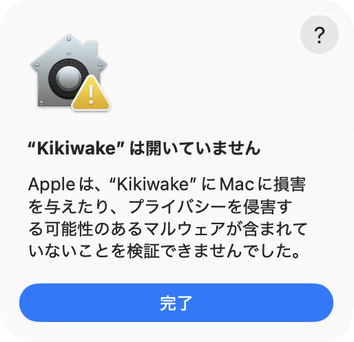
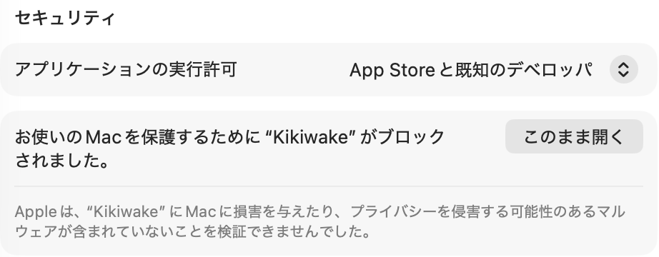

警告は、Apple の有料の開発者登録をしていないために出るもので、壊れているわけではありません。

「ゴミ箱に入れる」が出ても押さないでください。

下の「設定を開く」をダブルクリックすると、この画面が開きます。「このまま開く」を押したら、パスワードを入れます。
← ここをダブルクリックすると、3 の画面が開きます
「“Kikiwake” を開きますか?」と出たら、押します。これで開きます。
このまま開く出ないときは、Kikiwake を開き直してください。